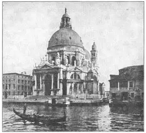
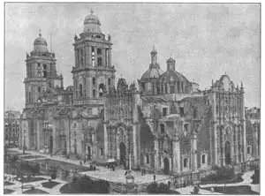

82
BREAKING RULES
打破陈规

HAVE you ever gotten tired of being good? Have you ever felt like throwing an inkwell through the window at school or standing on your head when the teacher asked you a question in arithmetic? Have you ever wanted to whistle out loud in church just because everything was so quiet and solemn and you knew you shouldn’t?
The trouble with doing any of these things is that afterward you generally wish you hadn’t. It’s not much fun being punished. I found that out, myself, almost every time I tried not being good.
The architects of Italy, after about two hundred years of Renaissance buildings, were like that. They seemed to be tired of being good and obeying all the rules for beautiful Renaissance buildings. The rules “cramped their style.” In the strict Renaissance architecture almost every part of the building had to be based on some idea from the ancient Romans. The new kind of architecture grew out of the Renaissance architecture, but it tried to break the rules. It was called Baroque architecture. I can’t tell you for sure how the word “Baroque” started, but people say it came from a Portuguese word for a badly shaped pearl.
Baroque architecture has been punished, not by getting a spanking but by being held up as a bad example ever since. It has really been punished too much, for some Baroque buildings are very fine and very beautiful. The worst Baroque buildings are terrible. They broke too many rules, like a bully in school. But the best Baroque buildings are not bad at all. They broke just enough rules to be interesting—just as a boy who is sometimes bad is more interesting than a goody-goody.
Buildings in the Baroque style are generally very well planned. They fit the place where they are built. They seem to go well with the scenery around them. The trouble with them is that they look too proud, too crowded with decoration, as if they were trying to show off. They are covered, inside and out, with queer columns and statues and scrolls and twists and fancy marble slabs. They make you think of a very, very fancy birthday cake with icing frills and curlicues all over it.
This Baroque architecture began in Italy. It became the chief architecture of the seventeenth century in that country. And in Italy stands one of the most beautiful of all Baroque buildings. It is a church built beside the Grand Canal in Venice. This church was built for a very special reason. That frightful disease called the plague had killed about a third of all the people in Venice. Sixty thousand people had died. Then the plague stopped. The people who were left alive were so thankful for being spared, that they built the beautiful Baroque church as a monument of thanksgiving. They named it (of course in Italian) the church of Saint Mary of Good Health. Everybody calls it by its Italian name, so you will have to try to learn Saint Mary of Good Health in Italian— Santa Maria della Salute. See if you can pronounce it like this: San’tah Ma-ree’ah del’lah Sah-lou’tay.
Santa Maria della Salute is in the form of a Greek cross. It has a big dome over the central part and a small dome over the chancel. The buttresses for the dome are shaped like rolls of ribbon.
Notice how crowded with statues and with these rolls the church seems to be. But also notice the beautiful flight of steps that leads down toward the canal. The church makes one of the most beautiful sights in Venice as you look at it across the water.

No.82-1 SANTA MARIA DELLA SALUTE, VENICE（威尼斯安康圣母院）
This fancy Baroque architecture spread all over Italy and into Spain and Portugal. In Spain a few of the Baroque churches are so crowded with decoration and seem to be showing off so much that you might think they were designed by crazy people. Other Spanish Baroque buildings are quite beautiful, although they would be ugly in a country where the sunlight wasn’t so bright. The brighter the light, the more decoration a building seems to be able to stand.
Now that we have reached Spain, we come to the people who used Baroque architecture all over the world. In the Roman Catholic Church a body of men like the monks of the Middle Ages was formed to spread the Catholic religion. The men who belonged to this body were called Jesuits. The Jesuits built churches wherever they went, and usually they built their churches in the Baroque style.
In this seventeenth century, the kingdom of Spain was very powerful. The Spaniards had gone exploring. They had taken, in the name of their king, most of South America and a great deal of North America, too. Wherever the Spanish explorers went, the Jesuits soon followed, preaching Christianity to the Indians, founding Indian schools, and building churches. Soon there were more Baroque churches in the Americas than in all of Spain.
These Jesuit churches were so well built that most of them are still standing in spite of earthquakes, revolutions, and neglect. You can imagine what a hard job the Jesuits had. First they had to learn the Indian language or teach the Indians Spanish. They had to show the Indians how to build the stone buildings, often in the hottest kind of hot countries. Yet before the buildings could be built, the land had to be cleared and the stones dug out of the quarries.

No.82-2 CATHEDRAL IN MEXICO CITY（墨西哥城大教堂）
Photograph by Ewing Galloway
The picture shows you the great cathedral at Mexico City. It doesn’t look much like the Santa Maria della Salute, does it? But it, too, is Baroque in style. You can see how much decoration there is on it.
Baroque architecture was used also in Germany. Some of it came to France, but very little was ever used in England. If you will remember the seventeenth century, Spain and Portugal and their colonies, and Italy and Germany, you will have in your mind the time and places where this queer, gay Baroque style was most used.
【中文阅读】
你是不是对做个好孩子已经厌倦了呢？你是否想试试把墨水泼到教室的窗户上？或当老师要向你提算术问题时你却在玩倒立？你是否想在教堂里大声吹口哨，只因为那里太安静太庄重，而你又知道不该这么做？
做了上述任何一种尝试之后的麻烦就是，你会后悔要是没做就好了。受惩罚可不是什么好玩的事。而差不多每当我想去使坏的时候，我都会产生深刻的自我发现。
而意大利的建筑师们也有这种心态。他们在文艺复兴式建筑两百多年之后，似乎厌倦了常规。他们为了建造漂亮的文艺复兴式建筑而墨守成规。可这些规则“束缚了他们的风格”。苛刻的文艺复兴式建筑几乎要求建筑的每部分设计都必须依据古罗马的某些理念。于是一种试图打破陈规的新型建筑风格就从文艺复兴式建筑中脱颖而出了。它叫做“巴洛克式建筑”。我不知道这个“巴洛克”到底是怎么来的，但听说它是葡萄牙语，意为形状不规则的珍珠。
巴洛克式建筑已经得到了惩罚，不是被扇了一耳光，而是从此被立为一本反面教材。这惩罚也许真的太重了，因为某些巴洛克式建筑物还是很精美的。但是最差的巴洛克式建筑物的确糟糕透顶。它们太不守规矩，就像一个恶霸闯进了学校。但最好的巴洛克式建筑物还真的一点儿也不难看。它们仅仅是为了吸人眼球而竭力打破规则——就像一个坏孩子有时比好孩子要可爱一样。
但总的来说，巴洛克风格的建筑整体设计还是合理的。它们在布局上与所建之地相吻合，与周围的环境和背景也协调。它们的问题是让人看起来似乎太自大，装饰品太多，好像在炫耀。建筑物的里里外外到处可见奇特的柱子、雕像、回纹、曲线，以及花哨的大理石板。它们让你想起一块花里胡哨的生日蛋糕，上面缀满了花边和花式。
这种巴洛克式建筑始于意大利。它成为意大利17世纪建筑的主流风格。最好看的巴洛克式建筑物也在意大利，那就是建在威尼斯大运河旁的一座教堂。这座教堂的建造有一个非常特殊的原因，当时有一种叫做瘟疫的可怕疾病，在威尼斯蔓延，夺去了差不多三分之一人的性命——六万人丧命。后来瘟疫停止了。活下来的人因幸免于难而非常感激，于是就建造了这座纪念性的、漂亮的巴洛克教堂，以示感恩。他们将 它命名为（当然是用意大利语）“安康圣母院”。人人都用意大利语称呼她，所以你也不仿用意大利语说说看——桑塔·马利阿·德拉·萨罗塔。
安康圣母院是以希腊式十字形风格而建的。教堂中央顶部是一个大型圆拱，圣坛上方有一个小型圆拱。圆顶的扶壁形似条条丝带。
请看，布满雕像和丝带状扶壁的教堂是多么的拥挤。但不要忽视那通向运河的美丽的层层台阶。当隔水相望时，就会发现这座教堂是威尼斯最美的景致之一。
花哨的巴洛克式建筑物遍布意大利，并传至西班牙和葡萄牙。在西班牙，有几座巴洛克式教堂装饰累赘，太过炫耀，让你感觉设计者简直就是一群疯子。但也有一些巴洛克式建筑物倒很美观，尽管在阳光不充足的国家它们不太中看。因为光线越强，建筑物所承受的装饰品才能越多。
现在我们已经来到了西班牙。我们来看看这把巴洛克风格传遍全世界的西班牙人吧。罗马天主教里有一群像中世纪教士一样的人，他们为传播天主教而成立了一个叫“耶稣会”的团体，成员就叫“耶稣会士”。他们在所到之处都建立教堂，而他们所建造的教堂通常都是巴洛克风格的。
17世纪时，西班牙王国非常强大。他们开始扩张。他们以国王的名义占领了南美洲的大部分地区，甚至在北美洲也占领了一大片。西班牙探险者所到之处，都会有耶稣会士跟上。他们向印第安人传播基督教，为印第安人建立学校和教堂。很快，美洲的巴洛克式教堂就比整个西班牙都多了。
耶稣会建造的教堂非常坚固，它们尽管经历过地震、变革，甚至缺乏维修，其中大多数依然挺立。你可以想象当年耶稣会士的工作有多辛苦。首先，他们得学会印第安语，还要教印第安人讲西班牙语。他们必须指导印第安人怎样修建石头建筑物，而常常是在最热的国家最热的时候进行工作的。甚至在修造这些建筑物之前，必须把地面清空干净，还要从采石场开采石头。
下面这幅图所展示的是墨西哥城的大教堂。它看起来与安康圣母院大不一样，对吧？但它也是巴洛克风格的。你可以看到它上面有很多装饰品。
巴洛克风格也传到了德国。法国也采纳了一些，但英国几乎没有接受。如果你还能记得时间是在17世纪，地点是在西班牙、葡萄牙和他们的殖民地，还有意大利和德国，那你对这些怪异夸张的巴洛克式建筑就算是了如指掌啦。